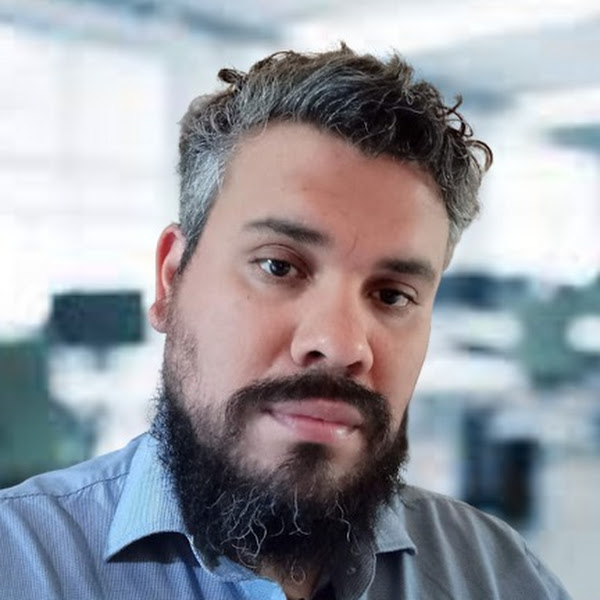

Nicolás
Pintos.
Tecnología que funciona en el mundo real.
Trabajo con empresas que necesitan resolver infraestructura, soporte, sistemas, compras tecnológicas y procesos sin agregar complejidad innecesaria.

Primero entiendo el problema. Después elijo la tecnología.
Consultoría IT para empresas.
Diagnóstico, diseño e implementación. Desde una red que falla hasta una infraestructura que ya no escala.
Infraestructura y redes
Redes cableadas y Wi‑Fi, switching, VPN, servidores, NAS, respaldos y acceso remoto.
Soporte y continuidad
Diagnóstico, incidentes, mantenimiento, recuperación y soporte para usuarios y equipos.
Tecnología y compras
Especificación, evaluación y selección de equipos para comprar lo que realmente necesita el negocio.
Sistemas y automatización
Herramientas internas, soluciones web, integraciones y procesos que eliminan trabajo repetitivo.
Tecnología para personas y empresas: equipos, soporte, infraestructura y sistemas.